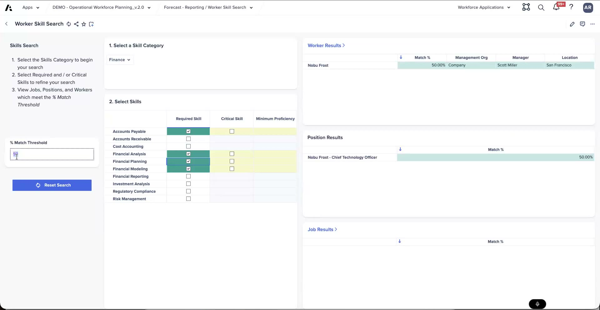

Skills Matching
Finding internal candidates — and why the data fights back
Skills matching lets you search the workforce for internal candidates who fit a role by their skills, rather than starting an external hire. It's a genuinely useful capability — and a good place to be honest with customers about how much depends on the quality of their skills data.
Worked example: matching by skills
Search workers by skills — for example accounts payable, financial analysis, financial modeling, and planning — with a match threshold that controls how strict the match has to be.
- 75% — too high; the strict threshold returns too few candidates.
- 50% — loosen it and more candidates appear.
- 25% — the best results in this example.
From the results you can drill into a candidate — here, Jennifer Hills — to check role, tenure, and performance before considering her for the position.
The example also uses the job General Counsel, where regulatory compliance is flagged as a critical skill. That critical-skill flag illustrates where a future weighting module would come in — giving critical skills more pull in the match than ordinary ones.
The skill-weighting module is roadmap and forward-looking, under Anaplan's safe-harbor caveat. Today, matching treats skills fairly flatly; weighting critical skills and proficiency more heavily is a future enhancement, not current out-of-the-box behavior.

Worker Skill Search — required/critical skills with the % match threshold; shown here at 50%.
The gotcha: dirty data and manual matching
Skills data is notoriously messy — "you have people that spell planning with four N's." Free-text and inconsistent skill entries mean the same skill shows up several different ways, which is exactly why you often have to drop the match threshold to 25% to get useful results.
On top of that, skills matching is a manual process out of the box. The app helps you search and compare candidates, but it doesn't automatically place people — a person still reviews the matches and decides. Set that expectation with customers so they don't assume automated matching at the outset.